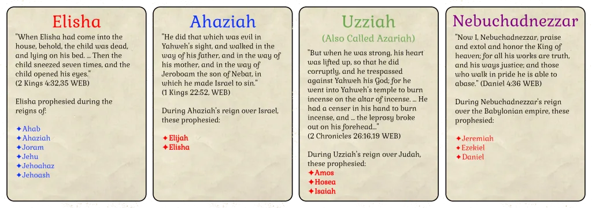

A set-building card game
Prophets & Kings
Match each Old Testament prophet with the kings of his day, or each king with his prophets, and build the longest sets.
- 1–6 players
- Ages 12+
- 15–30 min
- 70 cards
$19.99
Ships from the SDG Biblical Wisdom shop.

Who was prophesying when?
Prophets & Kings is a set building game based on the prophets and kings in the Old Testament of the Holy Bible.
Players earn points by building sets of cards that match a Biblical prophet with the kings who reigned during the years of his prophesying, or a Biblical king with the prophets that prophesied during their reign. The more cards in the set, the more points the player earns.
Scores are calculated at the end of the game, with the player with the most points being the winner.
Playing already? Open the scorepad to add up your sets.
The deck
The Prophets & Kings deck is comprised of 70 cards with each representing either a king or a prophet from the Old Testament.
The name at the top of the card is the prophet or king. If the name is red, then this represents a prophet. If the name is blue, then this is a northern kingdom (Israel) king. If the name is green, this king is from Judah. If the name is purple, then this represents a foreign king.
Each card includes a short passage from the Bible which gives us a glimpse into the life of this prophet or king.
At the bottom of each card is a list of names. For a prophet card, this is a list of the kings during whose reign the prophet prophesied. For a king, this is the list of prophets who prophesied during his reign. This tells you what you need to know as you build sets in playing the game.
Here are some important notes about the cards in the deck:
- Note that there are two Jehoahaz cards. One for the king of Israel and one for the king of Judah. Pay attention to which is needed for a given prophet.
- Several kings are known by different names or different spellings in the Bible. We have used the name by which each is best known.
- This naming is particularly confusing when there was a Joash/Jehoash as king in Israel and a different Joash/Jehoash as king in Judah at the same time. Only the Jehoash from Israel is in this game.
Here is a summary of the 70 playing cards in the deck:
Browse all the cards
A closer look at the cards
All Scriptures are from the World English Bible, which is in the public domain.
How to play
Prophets & Kings is a set building game. Collect sets that match a prophet with the kings of his day, or a king with his prophets: the longer the set, the more it scores.
Setup
- Deal 5 cards to each player.
- Place the remaining cards face-down as a draw pile.
- Turn the top 4 cards in the draw pile face-up to form 4 discard piles.
- Choose a player to go first.
On your turn
- Draw enough cards from any combination of the top of the draw or discard piles or blindly from another player’s hand to have 7 cards in your hand.
- You can take multiple from any source.
- If any discard pile is depleted, immediately replenish it from the draw pile.
- If you have any match of a Prophet and a corresponding King card, you may play it in front of you.
- Choose whether you want to build a series of Prophet cards to match the King card, or a series of King cards to match the Prophet. (Hint: Longer sets are worth more.)
- If building a series of Prophet cards, place the King card face-up on top and place the Prophet card behind with the name showing.
- If building a series of King cards, place the Prophet card face-up on top and place the King card behind it with the king’s name showing.
- If you have any cards in your hand that can be added to any series that you have already played (without duplicating cards already played in a series), you may add them by placing the new card behind those already played.
- If you still have more than 5 cards in your hand, discard down to 5 cards.
Ending the game
- The game ends when the last card is taken from the draw pile.
- The current player may complete their turn.
- Each series that has been played is scored as indicated in the scoring matrix below.
- The player with the most points wins.
Scoring
Scoring is based on the length of each set you have built. To calculate the set length, count both the Prophet and King cards. Score each set based on the table below and then add the scores for all your sets together to determine your total score. Note that the Scorepad app can greatly simplify this for you.
| # Cards in stack | Score |
|---|---|
| 2 | 2 |
| 3 | 5 |
| 4 | 10 |
| 5 | 25 |
| 6 | 50 |
| 7 | 100 |
Here are some examples to help clarify these scoring rules:
Get Prophets & Kings
$19.99 · If inventory is available, orders from the SDG Biblical Wisdom shop typically ship within a couple of days.
Otherwise you can order from The Game Crafter print-on-demand store.
Order from The Game Crafter